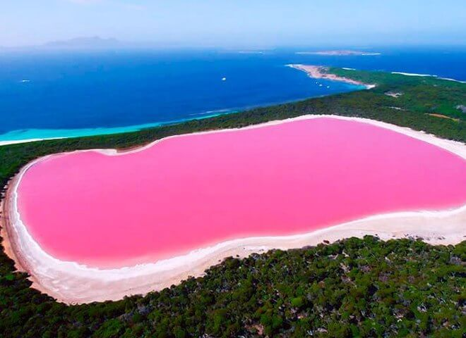
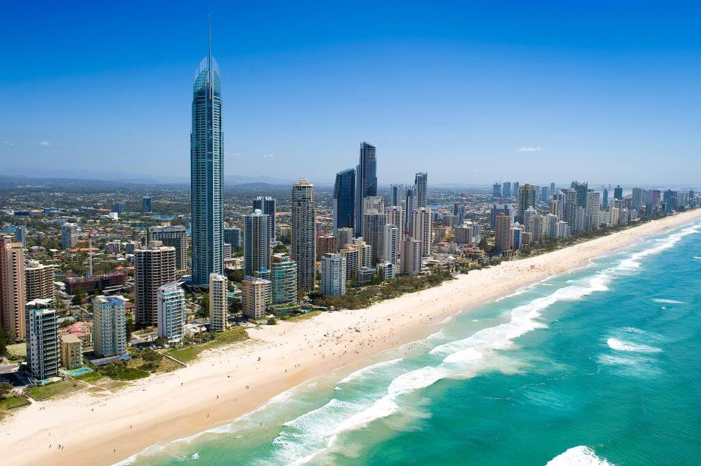
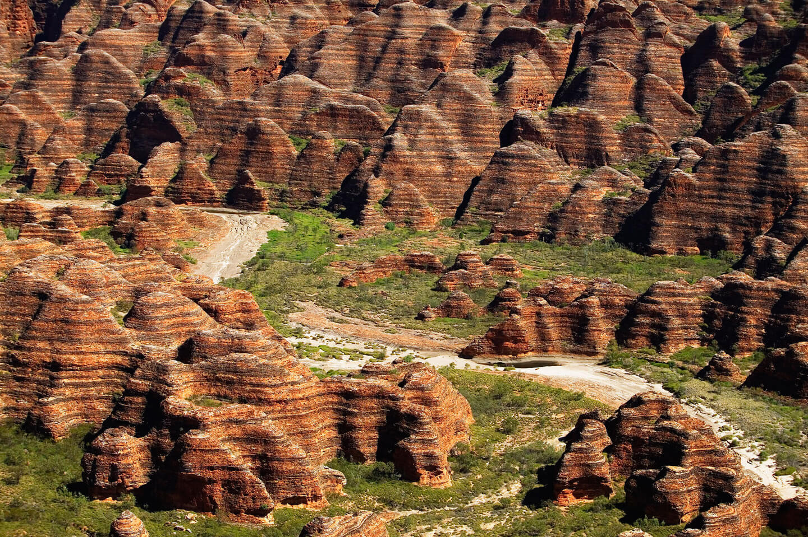
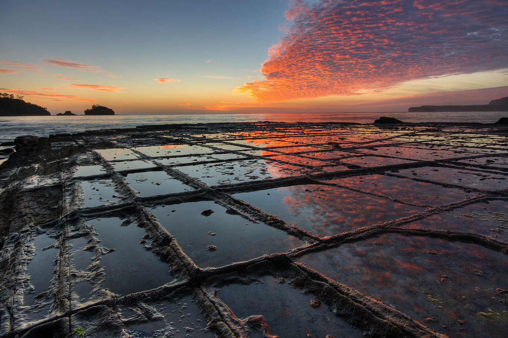
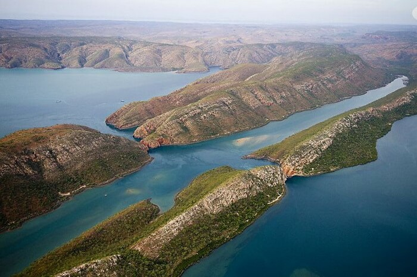

Австралія
Австра́лія або Австралі́йський Сою́з — незалежна федеративна держава, що знаходиться у Південній
півкулі й повністю займає однойменний материк, прилеглий великий острів Тасманія на півдні й
численні дрібні навколо, серед яких Норфолк і Лорд-Гав у Тихому океані, Кокосові острови в
Індійському та інші. Площа країни дорівнює 7 688 287 км², 6-те місце серед країн світу і
перше серед країн Океанії. Австралія на півночі відділена від Папуа — Нової Гвінеї водами
Торресової протоки, Тиморського і Арафурського морів від Індонезії та Східного Тимору;
на сході — водами Коралового моря від Соломонових Островів, Вануату і Нової Каледонії
(Франція); на південному сході — водами Тасманового моря від Нової Зеландії. Населення
країни становить 25,25 млн осіб.
Австралія — країна іммігрантів, переселенці складають
26 % населення, за цим показником країна посідає 9-те місце у світі. Столиця Австралії —
місто Канберра, розташоване у спеціально створеній Австралійській столичній території.
Найбільше місто — Сідней. Країна високо урбанізована, більшість населення мешкає на
південному сході, у штатах Вікторія та Новий Південний Уельс. Близько 60 % населення
проживає в найбільших містах та їхніх агломераціях: Сідней Мельбурн, Брисбен, Перт та
Аделаїда. Середня густота населення 3,3 особи на км², це найнижчий показник у світі.
Озеро Хіллієр (острів Мідл-Айленд)

На краю острова Міддл (Middle Island), розташованого біля південного узбережжя Західної
Австралії, є дивовижне озеро - Озеро Хіллер (Lake Hillier). А дивнe воно тим, що його вода
яскраво-рожевого кольору. Причому колір води не зміниться, навіть якщо його набрати в
контейнер. Це мілке солоне озеро, завдовжки близько 600 метрів, облямоване білою смужкою
солі і буйною зеленню евкаліптів, здається зовсім нереальним і казковим. Виявлено загадкове
озеро було ще в 1802 році британським мореплавцем Метью Фліндерсом.
Пізніше тут жили китобої
і мисливці на тюленів, а на початку ХХ століття з озера деякий час добували сіль. У 1950 році
група учених спробувала з'ясувати походження рожевої води. Спочатку передбачалося, що такий
відтінок їй надають червоні водорості Dunaliella salina, проте до великого здивування в озері
Хіллер не було виявлено навіть їх слідів. По сьогоднішній день залишається загадкою, чому вода
в озері рожевого кольору.
Канберра

Канберра – спеціально сплановане і побудоване столичне місто. Воно має модерний
вигляд та ідеально вписане в ландшафт погорбованої рівнини за 130 км від узбережжя. Крім
столичних, місто виконує важливі наукові, культурні і туристські функції.
Канберра центр політичного життя країни, але досліджувати австралійську столицю
зовсім не нудно, і розваги в столиці не обмежуються екскурсіями по урядових будівлях.
Пишна зелень парків і садів приховує стильні ресторани, модні бари, бутики, усілякі
пригоди на відкритому повітрі і багато веселих розваг для дітей. Місто славиться великою
кількістю барвистих фестивалів, свят, виставок та інших подій. Околиці Канберри запрошують
досліджувати більше 30 виноробень, історичні міста та селища, тихі узбережжя і чарівні
ландшафти південної гірської місцевості.
Красиве озеро Берлі Гріффін штучно створене в самому центрі Канберри. Туристи і
місцеві жителі люблять гуляти або кататися на велосипеді по доріжках на набережній,
влаштовувати пікніки вздовж берегів, облямованих парком, рибалити, гребти на човнах та
бордах по блискучих водах. У центрі озера є шість островів. На найбільшому острові Аспен
підноситься Національний Карильйон – подарунок від британського уряду з 55 бронзовими
дзвонами.
Національна галерея Австралії, розташована на березі озера Берлі Гріффін,
містить найбільшу колекцію мистецтва в країні. Кубічна будівля була відкрита королевою
Єлизаветою II у 1982 році і складається з 11 основних галерей на трьох поверхах, а також
великого саду скульптур. Колекція включає в себе твори з Австралії, Азії, Європи, Америки
і Тихого океану, а також найбільше в світі зібрання експонатів мистецтва аборигенів і
жителів островів протоки Торрес. Після екскурсії відвідувачі можуть досліджувати прилеглий
до Національної галереї Верховний суд Австралії з його фонтанами, фресками і підлогами з
каррарського мармуру.
Гора Ейнслі – найкраще місце, звідки можна помилуватися панорамою Канберри і
оцінити, наскільки ретельно архітектор Берлі Гріффін підійшов до розробки плану
містобудування столиці. Інші популярні оглядові майданчики знаходяться на Червоному та
Чорному пагорбах.
Гори Бангл-Бангл

Бангл-Бангл – це неймовірно красиві австралійські смугасті гори. Частенько подібні
пейзажі по-справжньому вражають туристів, багато хто з яких приїжджає в Австралію саме
із-за цієї різноколірної пам’ятки. Смугасті гори розташовані в штаті Західна Австралія в
Національному Парку Пурнулулу і нагадують листковий пиріг. Шари темних і світлих гірських
порід зливаються воєдино, тим самим і створюється чудовий пейзаж. Листкові гори –
стара пам’ятка і точного віку не знає ніхто. Учені припускають, що ним близько 350 млн.
років.
Зараз висота гір Бангл-Бангл 578 м над рівнем моря. Потік туристів росте з кожним
днем. Турагентства пропонують відправитися до парку в піший похід, але найкрасивіші види
відкриваються з кабіни вертольота або літака. Тільки з висоти можна цілком побачити
закручені каньйони і конусоподібні пагорби. Листкові гори Бангл-Бангл включені в
список всесвітньої спадщини ЮНЕСКО.
«Мозаїчна мостова» (півострів Тасманія)
Вузький перешийок, що з'єднує півострів Тасман і материк в Тасманії (Австралія) покритий красивими і дещо незвичними геологічними утвореннями. Ці структури, що утворилися в результаті тривалої ерозії, називаються Мозаїчної Мостовий. Це рідкісне освіту, зовні схоже на ідеальну бруківку, викладену людськими руками, насправді утворилося в результаті природних причин силами самої природи. Мозаїчної Мостовий це місце називаються тому, що камені тут, утворюють ідеально гладку горизонтальну поверхню, як би складену з багатокутних блоків, які за своєю ідеально рівній поверхні схожі на керамічну плитку. Вчені пояснюють, що неприродно ідеальна поверхня утворилася завдяки початкової ерозії під впливом хвиль, що несуть пісок і гравій, а також з-за хімічного впливу морської води. Частина тротуару, яка далі розташована від моря, висихає швидше під час відливу, ніж частини, що примикають до берега, дозволяючи кристалів солі розвиватися далі. В результаті утворилася поверхню, що нагадує за формою сковорідку, що в свою чергу призводить до ще більшого підвищення угнутості.
«Горизонтальні водоспади» ( бухта Талбот)

Горизонтальні водоспади знаходяться в австралійській затоці Телбот. Там розташовуються
дві гірські гряди на відстані приблизно в 300 м одина від одної, в кожній з яких є
вузькі розколини (ширина однієї з них близько 20 м, другий – 10 м). Під час припливів
величезна маса води із затоки спрямовується через розколини. Через різницю в рівні
води під сильним натиском утворюється природний феномен – горизонтальні водоспади.
Незважаючи на те, що австралійські горизонтальні водоспади явно не конкуренти
таким гігантам, як Ніагарський водоспад або водоспад Вікторія, Девід Аттенборо, один
з найвідоміших натуралістів в світі, дослідивши це природне явище, назвав його «одним
з найбільших чудес природи у світі».
Корисні посилання
- Іспанія
- Франція
- Канада
- Австралія
- Бразилія
- Аргентина
- Італія
- Індія
- ПАР
- Індонезія